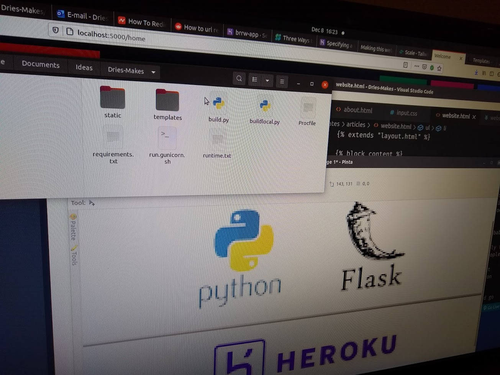
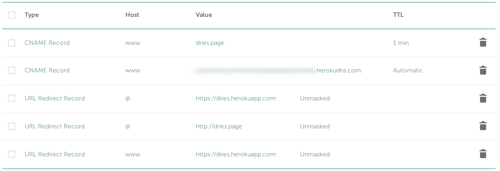

I want to explain how I made this website. As a starting web developer, I can’t write from years of experience but I have the advantage of knowing where other starters may struggle. It also seemed like a fitting first article to write here, since it’s about the website you’re looking at right now.
The easiest way to make your own website would probably be to use a template from SquareSpace or WordPress or something similar. For most people this might be the best option. But I’m assuming you are not most people, you are an aspiring web developer. You’re a nerd about staying in control of all the layout and scripts on your site, so you want to code it yourself.
Now, the easiest way to make your own website would go something like this:
Nice! You made a static site. The reason I did not go this route was because I have some more requirements:
Alright, now this is more of a challenge.
To satisfy our first two requirements of having a site that reuses code and is dynamic, we will need a framework. Laravel, Symfony, Ruby on Rails, Spring Boot, Django… The best web framework depends on the programming language you like and the complexity of your site. Most frameworks use a Model View Controller (MVC) structure, and are modular enough that differences will only matter if your project gets large or very specific.
Most frameworks also come with a bunch of premade folders and files which seem overengineered for simple websites. They’re not that complex once you are used to them, but since I wanted to use the minimal needed complexity, I chose a Python ‘microframework’ called Flask. It allows me to get a site going with one small python file, and add all the HTML elements in a folder called ‘templates’.
The folder structure could look something like this:
├── build.py
└── templates
├── articles
│ ├── article1.html
│ └── home.html
└── layout.html
Layout.html is the layout of any page on your site, with the article inserted in between block markers:
{% block content %}{% endblock %}.
The pages then each need to ‘extend’ the layout using {% extends 'layout.html' %} and wrap all the
contents in a {% block content %} content {% endblock %}.
The code of build.py would look something like this:
#Import flask and the functions to redirect and render pages
from flask import Flask, redirect, render_template
#name of our app
app = Flask(__name__)
#an empty route (mysite.com) returns mysite.com/home. This is optional.
#You could also do it the other way around.
@app.route('/')
def home():
return redirect('/home')
#what to serve for a given page.
@app.route('/')
def article(page):
return render_template('/articles/'+page+'.html')
app.run(debug=True)
By default, Flask runs on localhost port 5000 so you can easily test your site as you build it.
That's it, we now have an extremely basic content management system that runs on a local server.
The next step is to add a CSS framework. I'm using Tailwind, since I love how customizable it is without having to write additional CSS classes. For this project it was the best choice out of the frameworks I know, because it aligns with our goal of staying in control and keeping the final result simple (after purging). Ultimately, which framework you use is a matter of personal preference that hardly affects your workflow of making a dynamic site. However, ti's hard to switch later on, so choose wisely.
Next, we need to buy a domain. I have good experiences with namecheap.com. Their domains seemed a little cheaper overall, they have good documentation, reputable service and a clear interface for DNS configuration and such. While an email address is included it is redirected to your personal email address, unless you pay extra. However, it is easy and free to setup your site with a good SSL/TLS certificate from Let's Encrypt. This will come in handy later on.
Now, we only have to host our site on our own domain. This took longer than I anticipated. It's not something we really learned during our training so I ran into a few hurdles.
The first hurdle was hosting the site on a remote server, not via our own domain yet. Of all the options out there, in the end, only Heroku seems to offer a perpetually free server with all the required tools. I also had a decent experience with a provider called CloudSigma, but couldn't get everything up and running within my free trial period and I wasn't willing to pay because I was unsure if I would run into other unforeseen issues with them. However, in the end, Heroku has everything I needed.
First of all, if you like Flask but your site doesn't really need a server or much of a backend, you can take a big shortcut here using a module called Frozen-Flask. It will turn your flask site into a static site so you don't have to worry about Heroku and dyno's and environments and credit cards at all. For everyone else, make sure to oil your search engines.
Something I didn't quite appreciate was that the server is in fact another machine than my own. Of course I knew this, but the implications are that it has its own operating system, its own hardware resources, its own applications, and all of this needs to be setup correctly. Heroku offers a dyno that runs the server process, a CLI which allows you to control and troubleshoot your site builds from your own terminal, integration with Github, a not too complicated process of creating the environment on which the app runs via a buildpack, and a big community. The documentation is sometimes a bit too brief but the options are very extensive. If you want to add a database from scratch, it might be worth picking up PostgreSQL since it can be added as a resource in Heroku. This makes it easier to have persistent data and manipulate your database remotely.
Something else I needed to do was to use another command than the built-in app.run to serve my flask application, since it's not really made for production environments. I used a Flask module called 'waitress'. The end of my build.py script now looks like this:
if __name__ == "__main__":
app.debug = False
port = int(os.environ.get('PORT', 33507))
waitress.serve(app, port=port)
I also kept a seperate file to still build locally using the built-in flask run function.
Now for a little list that I wish someone had told me. To make sure that Flask and all its modules work on the server, I needed to add these files in my root directory:
gunicorn build:app. A procfile is just a file without an extension,
called PROCFILE, which contains commands that Heroku will run automatically when the app is uploaded.gunicorn -b :5000 --access-logfile - --error-logfile - build:apppython-3.8.5. This file is not strictly required but it's useful to avoid issues related to having a
different python version locally and on the server.Flask&0.11.0 Jinja2==2.7 Werkzeug==0.9.1 waitress==1.4.4 gunicorn==19.6.0
In case you are wondering, Werkzeug is a library that Flask uses, while Jinja2 is the templating language.
Our project structure now looks like this:
├── build.py ├── buildlocal.py ├── PROCFILE ├── run.gunicorn.sh ├── runtime.txt ├── requirements.txt ├── templates │ ├── articles │ │ ├── article1.html │ │ └── home.html │ └── layout.html └── static
The static folder contains all CSS, javascript, images and other static resources.
With the site hosted as a Heroku app, I still had to connect it to my personal domain. This requires verifying your Heroku account with a visa or mastercard, but it's free. Then, I had some security issues - adding a security certificate to Heroku is not free, and my own domain didn't trust the Heroku site so the user was greeted with a notification that the site is untrusted. Fortunately, I found out how to set it up right in the Advanced DNS settings:
Makes sense if you see it like that, but in my mind a redirect from my domain to the heroku domain would make the user see heroku in the address bar. Not the case! We have added our personal domain in Heroku, and so Heroku will serve to our domain, using the security certificate from our own domain. No extra certificate on Heroku needed.
That was the final piece of the puzzle. As you can see, the website is still very basic but I reached my initial goals. If you read this far, thank you! I hope this article can be useful to my fellow junior devs.
Dries out!
{% endraw %} {% endblock %}